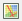
The SMART software consists of a number of perspectives and components that all interact with each other to produce a workflow for managing patrols and the information gathered during the patrols. Many perspectives share similar components, bringing familiarity throughout the application while still providing unique functionality for each perspective.
Overview
SMART Components
| SMART Component | Icon |
| Map View Perspective |  |
| Field Data Perspective | |
| Query Perspective | |
| Reports | |
| SMART Plans | |
| SMART Intelligence |
The Map View Perspective is the starting point when logging into SMART. In this window will be displayed the five (5) previously loaded administrative layers, in the Layers tab found on the left side of the screen. The icons above the layers list allow for reordering, restyling and zooming to the extents of the layers. In this perspective, an Administrator can make changes to the default cartrography of the Conservation Area (see Creating Basemaps).
Note: Mapping windows exist in the Patrol and Query Perspectives and the map navigation for these windows are the same as the Map View Perspective.
| Moves the selected layer up in the list | |
| Moves the selected layer down in the list | |
| Changes the style of the selected layer | |
| Toggles whether the selected layer should be focused or not | |
| Zooms to selected layers |
Navigating in SMART's mapping window is a simple process that follows many of the same procedures as other GIS applications. Users can pan around the map, zoom in/out or zoom to the full extent of the spatial files loaded into the mapping window.
| Save a basemap | |
| Select a basemap | |
| Pan | |
| Zoom to area | |
| Zoom out | |
| Zoom in | |
| Zoom to full extent | |
| Add a layer to the map |
Setting Map Scale and Projection
At the bottom of the mapping window, users can manually set the view scale and available projections.
Note: additional projections are only available after an Administrator has added the additional projections to the Conservation Area (see Manage Projections)
Additional spatial layers can be added to the mapping perspective to add context to the five (5) boundary files that were uploaded during the initialization of the Conservation Area.
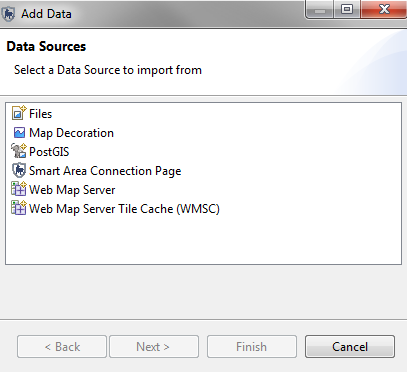
Files - ESRI Shapefiles, ArcGrid files and various image file formats are all supported.
Map Decoration - North arrow, scalebar, legend and a grid are additional cartographic elements.
SMART Area Connection Page - opens the dialog for adding/updating the original five (5) boundary files.
Web Map Server - Adds a connection to a Web Map Server (WMS).
Web Map Server Tile Cache - Adds a connection to a Web Map Server Tile Cache (WMS-C).
SMART has an extensive tool set for creating custom maps with user-defined colours and labels. The Style Editor dialog allows for customization of many cartrographic components for point, line, and polygon layers.
Style Properties
General - sets min/max viewing scale and any potential offset applied to the visualization of the layer.
Border - sets the border characteristics of the polygon.
Fill - set the internal characteristics of the polygon.
Labels - sets the labelling characteristics.
Filter - custom filters can be created to reduce unwanted features from the mapping windows.

Layers can be removed by selecting the layer and right-clicking the mouse to bring up additional functionality including Delete. Layers can also be deleted by selecting the layer and clicking the "Delete" button on the keyboard.
Individual layers can be exported to Shapefiles and the entire mapping window can be exported to an image file. Exporting layers or map images can be accessed through the menu File - Export Map option or by selecting layers and right-clicking the mouse to access the Export Map functionality.

Basemaps are a saved cartographic representation that can be applied to the entire Conservation Area to provide consistency through the various perspectives. Layers, colours and labels are some of the elements that can be saved in a basemap. Multiple basemaps can be created by the Administrator, and these basemaps can be accessed later by the other user level accounts.
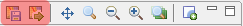
Creating and Selecting a Basemap
Cartography for basemaps is set in the Map Perspective. After the
cartography has been set the basemap is saved as a new basemap or to overwrite
an existing one. 
After a basemap(s) has been created the Administrator can set a that basemap to be the default for the Conservation Area.
A non-Admin user can chose to use an alternate basemap for an open session
by using the select basemap option and chosing the "Use a session default".

Managing Basemaps
By selecting Conservation Area - Manage Basemaps an Administrator can set a basemap as the default for the Conservation Area, delete an existing basemap or to rename/translate its name.

Basemaps in Reports
Embedded maps in Reports also use basemaps to set the cartography of the map object. In the MapLayers tab the user can select which Basemap to use for the report map object.

The Patrol Perspective is where patrols are created and their associated observations are recorded. The Patrol Perspective is divided up into three parts.
Patrol List View - The list of patrols entered into the Conservation Area.
Layers - Mapping layers including the patrol waypoints and tracks in the mapping window.
Patrol Info Window - This is the main window where the information gathered during the patrol is accessed. At the bottom of this window will be:
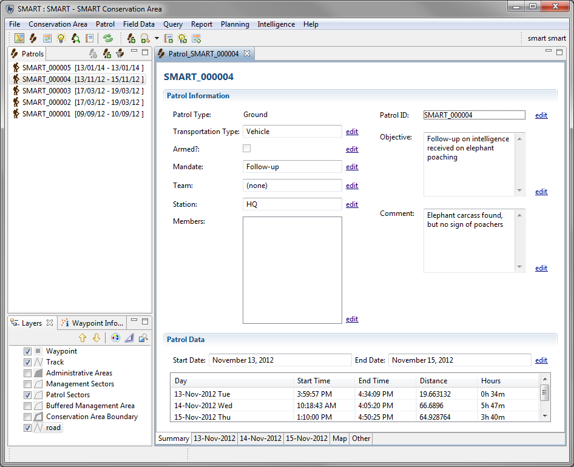
As part of the initialization process for a new Conservation Area, the Administrator is required to configure various field data parameters.
Field Data Options allow for:
Record Distance and Direction: If checked, patrol data will have two extra columns to record distance and direction offsets of observations from the captured coordinate information gathered by the GPS.
Edit Options: Indicates the number of days after data entry during which the patrol data can be edited by non-Administrator accounts. The default of -1 specifies that the patrol will always be editable.
Data Entry Projections: Projection in which data is displayed and entered by default.
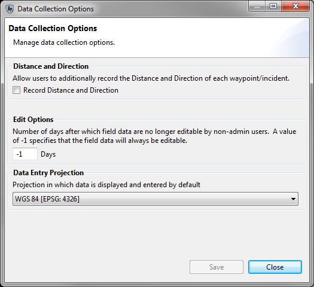
Patrol Mandates are a list of Mandates that are associated with each patrol. This process is not a requirement during the initialization of the patrol information for the Conservation Area.

Add: Adds new mandates to the list.
Disable/Enable: A mandate can be disabled if not currently in use, but it still has patrols associated with it. It can later be enabled for future use.
Delete: Permanently deletes the mandate from the list. This is only possible if no patrol information is associated with it.
Edit Key: Allows for manual changes to the primary key.
Note: The language is set before entering in the mandate list entries.
Patrol Types are the transportation types used by patrol teams in the Conservation Area. The base options for Patrol Types are Air, Ground and Marine. Each of these options can be disabled if not in use by the Conservation Area. The Transportation Options are the specific types of transportation for the base options of Air, Ground and Marine.

Add: Adds new transportation options/types to the list.
Disable/Enable: A transportation option/type can be disabled if not currently in use, but it still has patrols associated with it. It can later be enabled for future use.
Delete: Permanently deletes the option/type from the list. This is only possible if no patrol information is associated with it.
Edit Key: Allows for manual changes to the primary key.
Note: The language is set before entering in the transportation options.
Patrol teams, their mandates and descriptions are all entered and managed in this screen. If no mandates have been created, there will be no option to select from the list. This process is not a requirement during the initialization of the patrol information for the Conservation Area.

Team: The name of the patrol team.
Mandate: The mandate of the patrol team selected from the list of previously created mandates.
Description: The description of the patrol team.
Add: Adds new patrol teams to the list.
Disable/Enable: A patrol team can be disabled if not currently in use, but it still has patrols associated with it. It can later be enabled for future use.
Delete: Permanently deletes the team from the list. This is only possible if no patrol information is associated with it.
Note: The language is set before entering in the patrol teams.
Patrols and their observations can be entered by a SMART user with appropriate permissions, after the Conservation Area and Patrol properties have been completed.
The creation of a new patrol starts with selecting the "Create New Patrol" from the Patrol menu to initiate the patrol entry wizard. SMART's patrol entry wizard is designed to guide the user through the process of entering in the characteristics of the patrol.
Patrol Entry Window Steps
Multi-Leg Patrol Wizard
A multi-leg patrol occurs when a patrol group splits up into two or more groups or the patrol changes transportation type or leader. A patrol split divides the single group into two groups, each with their own leader and transportation type. If a patrol requires further splitting then one of the sub-groups will require a further split. Divided groups can be recombined into a single group, or left to complete the patrol in separate groups.

Waypoint coordinates are primarily entered into SMART through automated processes that extract the waypoints directly from a GPS unit or through the importation of standardized GPX files. The SMART import wizard has options to automatically assign the waypoints to the appropriate day based on the GPS timestamp or to have the user manually assign waypoints to a specific day if required. A manual option exists to enter in waypoint coordinates if the locational information was not captured by a GPS.

Start Time - the patrol start time for that day or leg.
End Time - the patrol end time for that day or leg.
Rest Minutes - number of minutes the patrol was resting.
Distance Travelled (km) - calculated distance travelled for the patrol day or leg (based on GPS track information or calculated by available waypoints).
Set Track - opens the GPS track import wizard.
View TrackPoints - opens a window to view the trackpoint coordinates and timestamps.
Import Waypoints - opens the GPS waypoint wizard.
Waypoint Table Fields
WayPoint ID - Waypoint ID assigned by the GPS or by SMART if manually entered.
Longitude - Longitude coordinate captured by the GPS or entered in by the SMART user.
Latitude - Latitude coordinate captured by the GPS or entered in by the SMART user.
Time - Timestamp captured by the GPS
Observation - Clicking on the icon in the Observation cell will initiate the Waypoint Oberservation wizard
Comment - GPS entered comments are automatically brought into this field. Manual comment entry is also possible.
Attachments - File attachments are added to the waypoints by clicking the icon in this cell to open the attachment window.
The initial step after selecting the Import Waypoints link is to select the import method.
GPS Import - Select this method if the GPS does not act as a mass storage device.
GPX Import - Select this method if the GPS functions as a mass storage device.
CSV File - Select this method if your data is stored in a CSV file.
GPS Import Options
GPS Device Type - Select the GPS device and protocol.
Import All (and assign to appropriate day) - SMART will use the timestamp from the GPS and assign the collected waypoints to the appropriate date.
Import Only waypoints for <date> - SMART will import only the waypoints for the selected date.
Select which waypoints to import for <date> - The SMART user will select and assign waypoints to the selected date.
Select which waypoints to import

Selection of the waypoints can be done individually or through the Select All option.
GPX Import Options
Add - Opens window to allow for selection of GPX files. Files can be stored on the GPX or an independent computer.
Remove - Removes selected GPX files from the wizard.
Import All (and assign to appropriate day) - SMART will use the timestamp from the GPS and assign the collected waypoints to the correct date.
Import Only waypoints for <date> - SMART will import only the waypoints for the selected date.
Select which waypoints to import for <date> - The SMART user will select and assign waypoints to the selected date.
CSV File Import Options
Select CSV File - Use this to select the CSV file from which you want to import your waypoints.
Import All (and assign to appropriate day) - SMART will use the time provided in the file and assign the collected waypoints to the correct date.
Import Only waypoints for <date> - SMART will import only the waypoints for the selected date.
Select which waypoints to import for <date> - The SMART user will select and assign waypoints to the selected date.
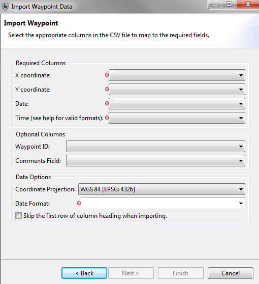
CSV File Configuration
X- Column - select the text from the first row of the file (header or value) which represents the column where theX co-ordinate values are stored.
Y- Column - select the text from the first row of the file (header or value) which represents the column where the Y co-ordinate values are stored.
Date - select the text from the first row of the file (header or value) which represents the column where the date values are stored.
Time - select the text from the first row of the file (header or value) which represents the column where the time values are stored. Valid time formats are as follows:
Optional Columns
Waypoint ID - Select the text which represents the waypoint id you would like to use. Left blank the system will select the next highest number in the patrol-leg-day as the id.
Comments Field - Select the text which represents the comments you wish to be added to the waypoint. Left blank, the comments field in SMART will be blank.
Data Options
Coordinate Projection - Select what projection your X and Y coordinate data is stored in.
Date Format - The format your dates from the Date column are stored in. See http://docs.oracle.com/javase/7/docs/api/java/text/SimpleDateFormat.html for date representations, you may type into this field to describe your format if it does not match one of the listed formats.
Skip first row... - Check this box if you have a header row at the top of your data.
If you are experiencing an issue importing waypoints from CSV files, this section should provide clarification and guidance on how to address several frequently encountered issues. Often times, all that is required to get the import to work is a simple manipulation of the file. Many of the examples here illustrate how to make new columns with date and time in formats that can be easily imported. The CSV import functionality only loads Waypoints, not actual observations. This is useful for speeding data that comes in digital format, but it doesn't completely automate it.
Files with date and time in the same column
You need to ensure date/time columns are correct. If date and time information is combined in one column, you have two options to correct it.
Option 1:
Option 2:
NOTE: for this example we are assuming date-time is in column A. If your date-time is in a different column, such as column G, then replace any column A references or formulas with G.
Files with no date or time
If you are importing a CSV file without a date or time, presumably you know what day this patrol was undertaken. From there, you can assign arbitrary times. This step is necessary since time is required.
a) One option would be to create a formula to add 10 minutes to each row.
Files with additional data rows before the waypoint data
If you are importing a CSV file with rows above the column headers, you will need to remove the additional rows so the column headers appear as the first row. Follow the below steps.
SMART allows for the manual entry of waypoint information.
Add Waypoint - Manual entry of waypoint information.
Delete Waypoint(s) - Deletes selected waypoint(s).
Move Waypoint(s) - Reassigns the selected waypoint(s) to another day.
Special Notes on Importing GPS Waypoints for Multi-Leg Patrols
If track information has been captured by the GPS device, the process to import the track information is the same as for waypoints, except that the process is initiated by selecting Set Track ...
Note: Tracks can be created from available waypoints if no collected GPS track information exists.
After a patrol has been created and the waypoints imported, the next step is to enter in the observations collected during the patrol.
The process begins by clicking on the button in the Observation column. This button will launch the Waypoint Observation entry wizard.
After a patrol has been created and contains waypoint and/or track information, the SMART user can use the Map tab (lower right) to view the track and waypoint information.
Navigation of the map will be the same as with the Mapping Perspective window. The only addition is the
information icon [  ]. By selecting this tool and then clicking overtop of
a map element, SMART will open up a window displaying the attribute information
associated with that feature.
]. By selecting this tool and then clicking overtop of
a map element, SMART will open up a window displaying the attribute information
associated with that feature.
Data entry in SMART is designed to be distributable. Multiple SMART users can enter in patrols and associated observations on multiple computers and export the patrol after the information has been entered. The patrol is exported in an XML structure and contains attached files (if any). This XML package can be later imported into a different computer.

Browse - Use to select the location of the exported patrols.
Include Attachments - If selected, the patrol exports will include any file attachments associated with the waypoints.
Patrol Filter - By default, only the last 20 patrols are shown, in reverse order. If more patrols are required, click the "here" link to show all patrols.
Select All - Patrols can be selected individually, or all at once by clicking Select All.
De-Select All - This button will de-select all previously selected patrols.
Export - Executes the patrol export process.
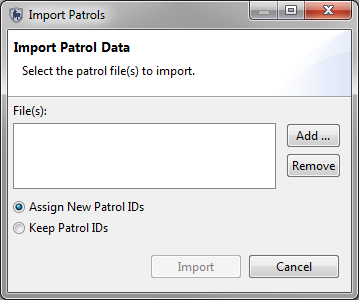
Browse - Imports a single patrol file.
Add - Allows for selection of multiple patrol files.
Remove - Removes unwanted patrol files from the import process.
Import - Executes the patrol import process.
Assign New Patrol IDs - Overrides the ID in the XML import and assigns new IDs to the patrols
Keep Patrol IDs - Preserves the original ID of the patrol
The Query Perspective is where the majority of the analytical capabilities of SMART are found. Queries can be created, run, saved and exported/imported. The results from the queries can be viewed directly in the Query Perspective or exported for use in other software applications.
Queries are sorted by the Type of Data you wish to Query and the type of results you wish to receive.
There are a number of different Data types you can query depending on which plug-ins you have installed in your SMART software. The basic types that all users will have are:
Other Types
There are 4 different queries result types available in all data types. Some plug-ins have additional types supported, the four basic types of results you can select are:
Other Types
Each of these query types has its own purpose and its own set of results that can provide the user with specific information about what is happening within the Conservation Area.
The SMART query perspective shares the same basic framework for all query types. Individual components of the five query types will vary depending on which query is chosen.
Note: Patrol and Waypoint queries share all the same components with each other and many of the same components as Summary and Grid Queries.
Users are encouraged to use and read the on-screen instructions provided by the "New Query Wizard" if they are unsure what type of query they would like to build. Use the Menu item: "Query->New Query Wizard..." to launch the wizard.
This wizard will help you select what data you wish to query and then what results type you would like.
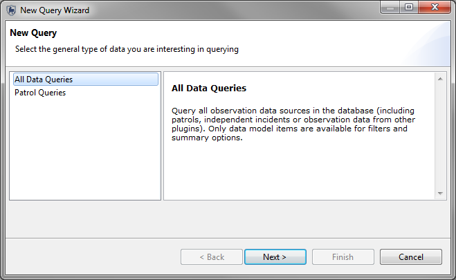
A SMART query is a logical expression used to filter the entries in the database. SMART has five query types (observation, incident, patrol, summary, and grid).
| Query Type | Icon |
| Observation | |
| Incident | |
| Patrol | |
| Summary | |
| Grid |
Observation queries are used to display what was encountered during the patrol. They display the raw observation records which meet the requirements of the filters. No summarizing takes place (ie. no totals, amounts, aggregations, etc.). Queries can be viewed in a table or on a map. When displayed on a map if more than one observation is present at a waypoint then multiple mapping points will exist in that location.
Example: Show me all observations for Patrol ID 1021
| Patrol ID | Patrol Leg | Patrol Date | Time | Observation Type |
| 1021 | 1 | Nov 3, 2011 | 9:34 | Human Activity |
| 1021 | 1 | Nov 3, 2011 | 10:23 | Animals |
Incident
Displays the locations that meet the requirements of the filters. This query will return a single location that meets the requirements of the query filter. Incident queries are used to query across multiple categories to see where multiple observation categories ocurred and what other observations have been seen at that location. Queries can be viewed in a table or on a map. When displayed on a map only one mapping points will exist in that location.
Example: Show me where patrols have confiscated weapons and carcasses.
| Patrol ID | Patrol Leg | Patrol Date | Waypoint ID | X | Y | Time |
| 1011 | 1 | Nov 1, 2011 | 7 | 49.5 | -123.0 | 7:34 |
| 1014 | 1 | Nov 2, 2011 | 32 | 49.1 | -122.8 | 12:14 |
Displays the patrols that were selected using the query filters (no information about observations or incidents are displayed). The patrol GPS tracks are displayed in the mapping window. Details about the patrols are displayed in the tabular window.
Example: Show me all patrols that encountered an elephant carcass
| Patrol ID | Patrol Leg | Patrol Date | Time |
| 101 | 1 | Nov 3, 2011 | 16:34 |
| 103 | 1 | Nov 7, 2011 | 10:23 |
A summary summarizes the raw data and allows for grouping into different categories. Items that can be summarized are values such as total number of patrols, the total distance travelled, the total number of snare observations and rate encounters (how many X per km, man-hours, time. Groupings are categories such as management sectors, patrol types, patrol mandates, stations, teams, etc. Summaries can only be viewed as tables. Results are displayed only in tables.
Example: Show me the total number of snares observed in each management sector for each of the last 6 months.
| January | February | March | April | May | June | |
| # of Snares | # of Snares | # of Snares | # of Snares | # of Snares | # of Snares | |
| Sector A | 7 | 6 | 3 | |||
|---|---|---|---|---|---|---|
| Sector B | 15 | 10 | 2 | 19 | 5 | 3 |
Results are displayed in a user specified grid (raster) format with aggregated results based on the defined grid size. Results are displayed in tables or on a map. These are commonly referered to as heat-maps.
Example: Show me how many patrols were in each grid cell
| Tile X ID | Tile Y ID | Value |
| -12358 | 4839 | 4 |
| -12356 | 4838 | 2 |
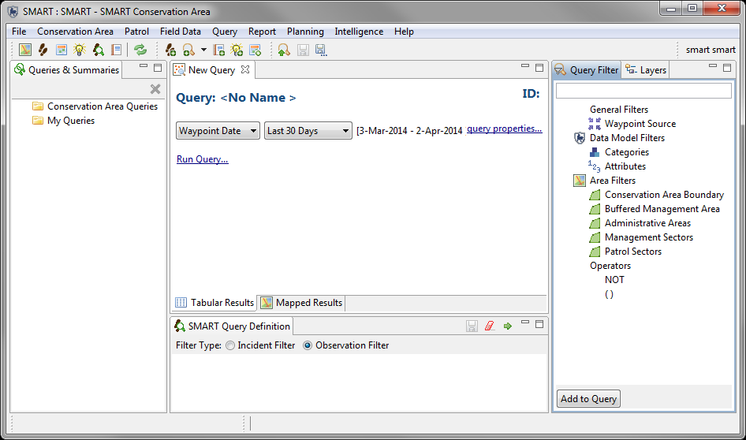
| Icon or Link | Description |
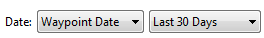 |
Filters the date of the query. |
| Used to change the name of the query. | |
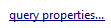 |
Changes the name of the query. Filters the fields returned in the query results. |
| Switches between tabular results and mapped results. | |
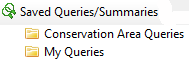 |
Location of saved queries and summaries. By default there are two
folders (Conservation Area Queries & My Queries).
Any user account can save into My Queries, but saved items are only accessible to the user account that created them. Only Manager and Administrator accounts can save into the Conservation Area Queries folder. |
| Used to filter the results based on patrol information. | |
| Used to filter the results based on categories and attributes in the data model. | |
| Used to filter the results based on the spatial boundaries of the Conservation Area. | |
 |
Operators of NOT and brackets () are used to change the logic of the query. |
| Executes the query. | |
| Clears the query. | |
| Saves the query. | |
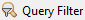 |
Tab containing the components used to build up the query or summary. |
| Tab containing the map layers. | |
| Window where the query or summary is constructed, erased, run and saved. | |
| A filter to select between patrol based observations and independent incidents | |
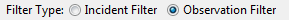 |
A filter to display incidents or observations when performing a query. |
The basic workflow to create queries is the same for all types of queries, but the specifics do vary depending on which type of query is being constructed.
Filter Types
Patrol - characteristics used when defining the patrol (station, team, members, etc…)
Data Model - components from the Conservation Area data model. Data model categories or attributes can be selected.
Area – allows for spatial filtering of the patrol based on the five default Conservation Area boundaries.
Operators – are used to alter the logic of the query to allow SMART users to be able to build more complex queries.
Operators include:
| Query Definition | Description | Filters Used |
| All patrols or observations led by Team 2 that left from HQ Station. | Patrol | |
| All patrols or observations where Roger Barrett was the patrol leader. | Patrol | |
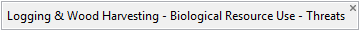 |
All patrols or observations recorded in the category (or sub-categories) of Biological - Resource Use - Logging & Wood Harvesting. | Data Model - Categories |
| All of the Threats under the category Biological Resource Use but not Gathering Terrestrial Plants. | Data Model - Categories | |
| Selects all patrols or observations that encountered a Sumatran Tiger regardless of which category it was recorded in. | Data Model - Attribute (global) | |
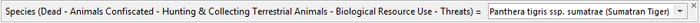 |
Selects all patrols or observations that confiscated a dead Sumatran Tiger from the parent category of Hunting and Collecting Terrestrial Animals | Data Model - Attribute (category specific) |
| Selects all patrols or observations that occured in the East Administrative Area | Area | |
| All patrols or observations that encountered a Hunting and Collecting Threat and occured in the East Administrative Area. | Data Model - Category & Area |
|
 |
All patrols or observations by Team 2 that encountered Sumatran Tiger tracks in the Administrative Areas of East or West | Data Model - Attribute (category specific) & Patrol & Area |
Observation and Incident Filters
After the basic filters (see above) have been constructed the user has a secondary filter option to further the results of the query.
| Query Type | Filter Type | Reason for Use | Results Returned |
| Observation | Observation | To find all raw observations. Does not query across categories. | All raw observations and might return many instances of a single XY. |
| Observation | Incident | To find out what other observations occurred at the incident locations. Can be used to query across categories. | All raw observations found at the incidents that meet the requirments of the primary filter. |
| Incident | Observation | To find the unduplicated locations that meet the requirements of the primary filter. Does not query across categories. | WIll return the basic location information for the query. No observation information is included in the results. |
| Incident | Incident | To find the unduplicated locations and can perform queries across categories. | WIll return the basic location information for the query. No observation information is included in the results. |
Summary Query Overview
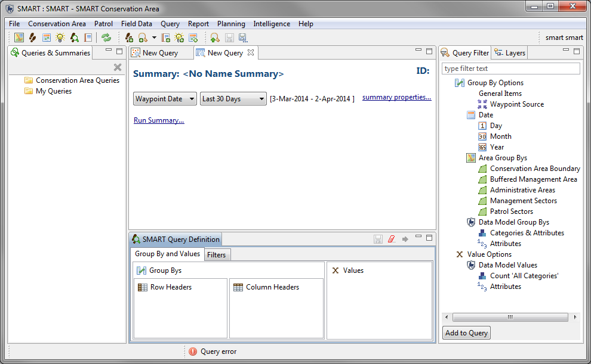
| Icon or Link | Description |
| Filters the date of the query. | |
| Used to change the name of the query. | |
| Changes the name of the query. Filters the fields returned in the query results. | |
| Location of saved queries and summaries. By default there are two
folders (Conservation Area Queries & My Queries).
Any user account can save into My Queries, but saved items are only accessible to the user account that created them. Only Manager and Administrator accounts can save in the Conservation Area Queries folder. |
|
| Filters the available query list. Constrution of the filters is the same as an observation or patrol query. | |
| Executes the query. | |
| Saves the query. | |
| Clears the query. | |
| Opens windows for the "Group By and Values Tab" and "Filter Tab". | |
| Filters patrol based information and independently sourced information | |
| Groups by the spatial boundary files associated with the Conservation Area | |
| Group By Options used to aggregate the summary value results. | |
| Available summary values used to create the summary. | |
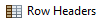 |
Group Bys will be placed vertically in the table as the starting header for each row. |
| Group Bys will be placed horizontally in the table as the starting header for each column. | |
| Patrol or data model values used to build up the summary. |
Group By Options
General Items - aggregates data based on patrol or independently sourced information
Area Group By - groups by the spatial boundary files associated with the Conservation Area
Date - uses dates to aggregate the data
Patrol Group By – aggregations of values based on patrol characteristics
Data Model Group Bys - aggregations of values based on data model entries.
Value Options
Patrol Values – inserted to find out values associated with patrols
Data Model Values - inserted to find out values associated with data model observations
SMART summaries can be formatted in different ways using the Row Header or Column Header windows.
Row Headers – Values inserted into Row Headers will return results with the Group By or aggregated entries appearing along the left most column resulting in a table with multiple rows.
Column Headers – Values inserted into Column Headers will return results with the Group By or aggregated entries appearing along the top most row resulting in a table with multiple columns.
X Value – Location where the values for the summary are placed.
Note: more than one entry can be entered into the Values or Group By windows but not all combinations are permissible if they break logical groupings.
Sample Summaries
The following summary is a basic summary to count the number of Observed Threats and Grouped by Patrol Types.
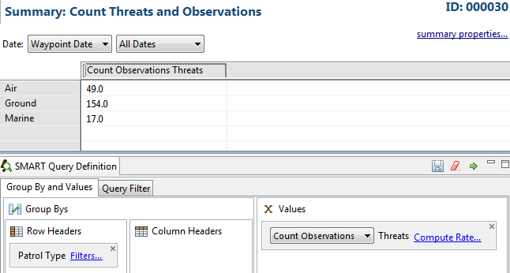
The query has been modified with the Number of Threats added a second time, but with the Count Incidents Option chosen.
This will give the number of observations and the number of incidents (multiple observations at one waypoint).

This example shows some basic stats on the patrol heading out from the Conservation Area stations. The X values of Number of Patrols, Days, Nights, Distance, etc.. are selected from the Patrol Values section.
The Station list is populated by selecting the Group By Option - Patrol Group Bys - Station.
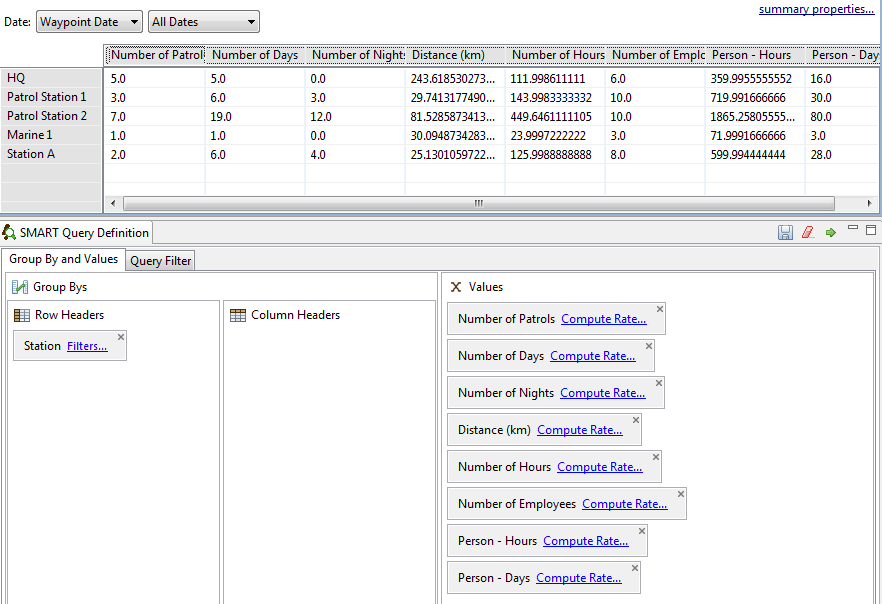
This example is of the same summary but without the Station Group By.
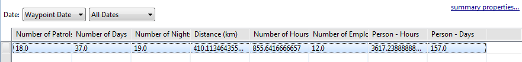
Aggregates
Once a data model Number attribute has its aggregates initialized they can be used in summaries to provide Min, Max, Sum and Average summaries for that particular attribute.
In the following example, the query is to show the Sum of the Number of Weapons Confiscated and Seen.
Note: If no Aggregates are available when building a Summary, then the data model has been set to disallow them. If required contact your SMART Administrator to initialize the Aggregates.

Compute Rate / Encounter Rates
SMART can provide Encounter Rates for the x Value Options. The base values are calculated against the chosen Encounter Rate to provide how many Observations/Incidents per X...
These rates are accessed through the Compute Rate link. If multiple Encounter Rates are required in the Summary then the Value item will need to be added as many times as required.

In the following example the Count of Threats (Incidents) per Distance, Person Hours and Patrols are summarized by Teams. The output of this summary shows Team 2 is encountering nearly 10 times as many threats per distance travelled as Team 1 and approximately 2.5 times more observations per kilometer than Team 3.

SMART's Gridded Summary Query summarizes the query into a user defined grid and outputs the results in a tabular form or in a raster map output. The raster map output provides a heat map of the summary results which can be quickly interpreted by users to see where the issues are located. The X values for the Gridded Summary are constructed in the same way as with the Summary queries with the major difference being that no Group-By Options are available.
| Icon or Link | Description |
| Filters the date of the query. | |
| Used to change the name of the query. | |
| Changes the name of the query. Filters the fields returned in the query results. | |
| Location of saved queries and summaries. By default there are two
folders (Conservation Area Queries & My Queries).
Any user account can save into My Queries, but saved items are only accessible to the user account that created them. Only Manager and Administrator accounts can save in the Conservation Area Queries folder. |
|
| Executes the query. | |
| Saves the query. | |
| Clears the query. | |
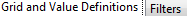 |
Opens windows for the "Group By and Values Tab" and "Filter Tab". |
| Option to chose the available projections to build the grid. | |
| Sets the grid size based on the map units of the projection. | |
| The value of the Gridded Summary. |
The following example is of a simple Grid Summary to show the Observed Threats based on a 0.01 (degree) grid. In a Grid query there is always a base display of where the patrols went.
These entries are given a value of 0. Any values greater than 0 indicate the presence of the chosen Grid Value.
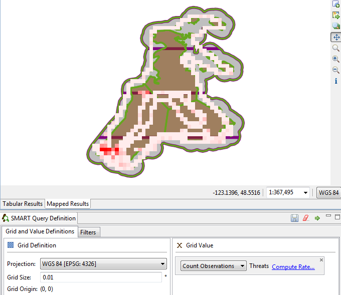
Grid Filters
Additional filters can be applied to Gridded Queries in the same way as with other query types. Selecting the Filter Tab will open the framework for adding additional filters to the query.
Note: If Encounter Rates are applied to the X Grid Values an additional filter (Rate Filter) appears in the Filter Tab. This additional filter can allow the user to fine tune the filter parameters to produce a multi-layered filter that is applied to the X Grid Value item.

SMART reports are highly configurable and allow for a wide range of standardized reporting. The information on the reports can be dynamically generated based on the results of SMART queries and summaries. A major component of SMART is its mapping ability, and SMART reports allow maps to be included and customized to suit the report. SMART reports contain many common reporting elements (tables, charts/graphs, images, etc...) as well as other elements (maps and dynamic query results) that all result in a powerful reporting package.
Report List Toolbar
The report toolbar has icons for creating, editing, running, exporting and deleting reports.
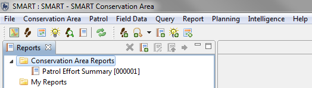
Report Toolbar Icons
| Deletes the selected report(s) | |
| Opens the report perspective | |
| Creates a new report | |
| Edits the selected report(s) | |
| Runs and exports the selected report(s) | |
| Runs the selected report(s) |
Report Editor
The Report Editor consists of a few basic components, which contain their own functionality and have their own purpose. In building basic to intermediate reports there will likely be many functions of the SMART reporting that will not be used.

Design Window
The Design Window is where the components of the report are organized. This window does preview what the final report will look like as reports are generally based off of dynamic data. The window allows for the layout of the objects to be added and customized as to content, size and style.
The Layout and Master Page tabs at the bottom are the two tabs that most users will mainly use. It is highly recommended not to make any edits in the Script or XML Source tabs, unless you are an advanced user who understands the risks of directly editing the code used to generate the report.
Property Editor
This window is used to edit the properties of the objects that have been loaded into the Design Window. The Property Editor options will change if you move between the Layout and Master Page tabs.
Report Properties (Master Page tab)
Used to specify general properties of the report’s master page.
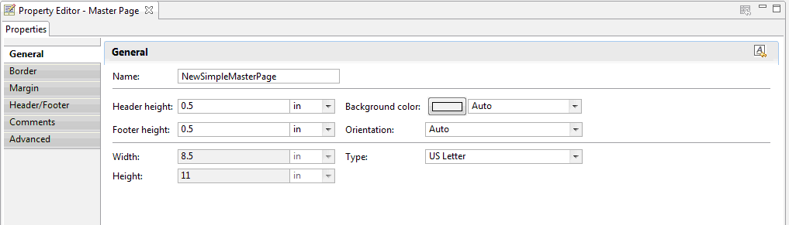
Outline
The Outline is used to organize the objects that are used to build and organize your report. Objects and Elements are imported into the outline, and allow for easy access to these components when reports are designed in the Design Window. If an object is commonly used by many reports (logos, titles, ...) then these objects can be exported to the Shared Resources library. This is done by right-clicking the object and selecting "Export to Library..."

Resource Explorer
The Resource Explorer is where the Shared Resources of the library are accessed. Here is where you can save common report elements that are used in multiple reports, for example logos. If an object will likely be used for most if not all reports, then it is best to share the object in the Shared Resources library. Any report creation and edits can immediately access these objects and do not need to import or link to any of them.
Note: It is recommended to limit objects in the Shared Resources library to objects that will be used by most if not all reports. Adding too many objects to the library negatively impacts performance of the reporting framework.
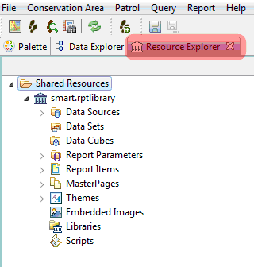
Report Items
Report Items contain many of the objects used to create the report. These objects are selected and inserted into the report editor window to build up the desired report.

SMART's data model is the foundation of the data entry, analysis and reporting. Defining a data model to meet the needs of a Conservation Area is crucial to ensuring that the data entry, analysis and reporting all work together to provide the information necessary to properly manage the patrols. The SMART software comes with a default data model that can be customized by a SMART Administrator to fully meet the requirements of the Conservation Area.
The SMART data model structure is based on a tree structure, comprised of
nodes (Categories) and a series of ‘leaves’ (Attributes) that can
be associated to any number of the tree’s categories. 
Categories can be with or without attributes, and can be a parent to other categories or a child to others.
SMART supports attribute types of Numeric, Text, List, Tree and Boolean. Usage of the attribute types will depend on the nature of the observation information collected in the field.
Examples and recommended usages of attribute types are:
| ICON | TYPE | DESCRIPTION |
| Numeric | Widths, lengths, amounts, numbers of animals, people or items | |
| List | Names of items where the list is known and the list is not too long | |
| Text | Specific names that cannot be preloaded into a list | |
| Tree | A collection of attributes that can be arranged in a hierarchical or logical format such as animal species | |
| Date | Date specific attribute | |
| Boolean | Any situation that can be answered with a Yes or No |
An attribute cannot exist on its own. It is an extension of a category and must be associated with a category. A category in contrast does not necessarily require attributes.
Attributes can be associated with a single category or with multiple categories.
Categories, attributes or values within attributes can all be deleted from the data model, or disabled.
Deletion - Completely removes the feature from the data model. This can only be done if there are no dependencies. A dependency can be a child category, attribute, recorded observation or query/summary. If no dependencies exist, the feature can be completely removed from the data model.
Disable - If dependencies exist or the administrator does not wish to fully remove the feature, it can be disabled. Disabling removes the ability to record any observations based on the disabled feature, but does preserve the ability to perform analysis on the feature. Disabling / Enabling categories is a much easier process because it does not require that all dependencies be disabled before proceeding with the higher level category. It also allows for re-introduction if the need arises. A disabled Category or Attribute will appear grey until re-enabled.
Categories and attributes can be repositioned by dragging the object into a new position within that tier.
Tree attributes can be pre-defined outside of SMART in an XML format and imported into the data model using the attribute Import option when creating a new attribute. The most common usage of this feature would be when creating a new Conservation Area and defining the Species list for the Conservation Area.
The default data model does not contain a predefined species list. The Import option allows for a custom importation of a species list that brings only the desired entries into the Conservation Area's data model. Other tree attributes can be imported if the XML is properly constructed.
If duplicate entries are selected on additional imports the import process will validate the incoming entries to what is available and filter out any redundant values.
When an attribute or category is created a unique key is automatically generated. The generated keys are generally the common name without spaces or other characters. If a common name is the same as a previous name, then SMART will append a number to the end of the common name to make it unique. If the common name starts with a number, SMART will drop the number(s) so that the key starts with an alpha character.
Note: It is highly recommended to leave the keys unedited unless you fully understand what could happen if the keys are edited.
Motivation
The current data model is designed for data analysis flexibility and not field user data entry efficiency. For example, the default data model has a variety of higher level categories (Animals, Features, People) that the field data entry users don’t necessarily want to select each time they make an observation. In order to improve data entry efficiency this document provides a collection of options to allows users to configure data entry aiming to make it more it more efficient.
The options below are critical for the success of the SMART CyberTracker integration as they will allow the SMART data model to be quickly and easily deployed with CyberTracker in a way that leverages the richness and ease of use CyberTracker users already expect.
The initial scope of work is to only update the SMART CyberTracker plugin to use the new features outlined below. There will be no changes to the existing SMART data entry UI. However, as additional work, the SMART data entry UI could be updated to make use of the new features.
Configurable ‘Data Collection’ Data Model
This application extension would allow users to create a custom “data collection” data model. This data model would be similar to the main data model however it would allow users to re-group categories in a form that makes more sense for data entry users and potentially provide additional properties to use in the data entry UI.
Description
Each category & all its associated attributes (including inherited attributes) in the main data model would be considered a data entry component. Users will be able to build a custom tree structure, adding these data-entry components to the tree. Users cannot add new data entry components, nor add new attributes. These functions would have to be done on the main data model.
Any data entry component can be renamed. This means that categories and attributes can be renamed for the configured data model. In the cybertracker, example a category with a long name might need to be shorter to display correctly on the screen.
List and tree attributes can have their list items or tree nodes renamed.
Data Model Attributes - Disable / Default Values
This extension would allow users to disable data model attributes for data entry purposes only and/or provide a default value to use for all observations of the associated category.
Attributes would have two additional properties:
Note: Modifications would probably have to be made by the CT to support default values. However, show attribute property could still be applied. In case where default values are not uses only non-required attributes would have ‘show attribute’ property.
These properties would apply to the given category/attribute combination. So if an attribute is used in multiple categories, the attribute can have different settings for each category. For example consider the following core data model:
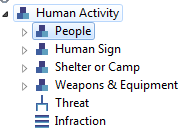
The Threat and Infraction attributes are inherited by the categories People, Human Sign, Shelter or Camp and Weapons & Equipment. In the core data model disabling the Threat attribute disables it for all categories. However, in the configured data model users would be able to set the ‘show attribute’ property to different values for each of these subcategories as shown in the sample configured model below:
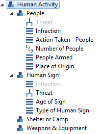
Note: the in addition to disabling specific attributes, attributes can also be ordered differently in different categories.
Collapsible Tree Attributes
This extension would allow users to specify if a tree attribute should be collapsed or not collapsed. Collapsing a tree attribute would convert the tree into a single list by including all the leaf nodes of the tree. In this case data entry users will not be able to select intermediate nodes as attribute values. Non-collapsed trees would remain as tree structures.
This is specified on a category/attribute level so if an attribute is re-used under multiple categories each category can have custom settings for the attribute. For one category they may choose to collapse the tree in another category they may choose not to.
Multi-Select Lists
Multi select lists would allow the user to define a single list attribute as a multi-select list for each category. Multi-select lists must be displayed to the data entry user in a way that allows the data entry user to select multiple items. Prompts then must be made for each additional attribute associated with the category for each item selected in the multi-select list.
Only a single attribute per category can be selected as a multi-select list.
The multi-select list attribute must be the first attribute in the list of attributes associated with the category. So users must first select all the possible list item values, then they can enter additional attributes about the list item.
Example:
Consider the following category/attribute combination.
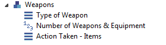
Analysis between Conservation Areas takes place in the Cross Conservation Area Analysis framework. This framework allows for queries between the Conservation Areas stored within one installation of SMART. Cross Conservation Area Analysis requires more than one Conservation Area loaded within one installation of SMART.
1. More than one Conservation Area is loaded into SMART
2. A Username and Password is common to the available Conservation Areas
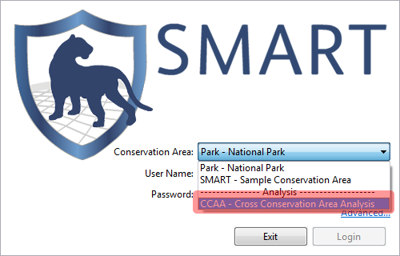
To log in, the user selects "CCAA - Cross Conservation Area Analysis" and is required to enter in the Username and Password that is common to the Conservation Areas.
After logging in to SMART, open up the listing of Conservation Areas available for analysis. This screen allows the user to choose which Conservation Areas (CAs) will be included in the analysis. The SMART user can select which CAs to include by clicking the "Modify..." link. This will open up a window where the user can select specific Conservations Areas for analysis. After the Conservation Areas are selected, SMART will validate the selected data models and search for common components that will be available for use in the Queries or Reports.
After the selected Conservation Areas have been analyzed for common elements, the user can begin the process of building queries and reports.
Overview Perspective
List of Cross Conservation Area Analysis Overview Icons
| ICON | DESCRIPTION |
| Query Perspective | |
| Report Perspective | |
| Creates a new Report | |
| Query Save | |
| Query Save As | |
| Export Query | |
| Create Query | |
| Refresh Windows | |
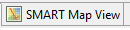 |
Map Perspective |
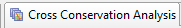 |
Cross Conservation Area Analysis Merge List |
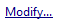 |
Opens dialog to select Conservation Areas for analysis |
Note: The icons used in the Cross Conservation Area Analysis are the same icons used by the rest of the program.
Creating basemaps in the Cross Conservation Area Analysis framework follows similar procedures as in a single Conservation Area. The exception to this is for the layers representing the individual Conservation Area boundaries. These layers are loaded into the basemap the same way as any other shapefile.
Note: SMART Area Connection Page does not reference the boundaries.
Once the layers have been added and themed, the Admin user can save the basemap for future use in the Cross-CA queries or reports.
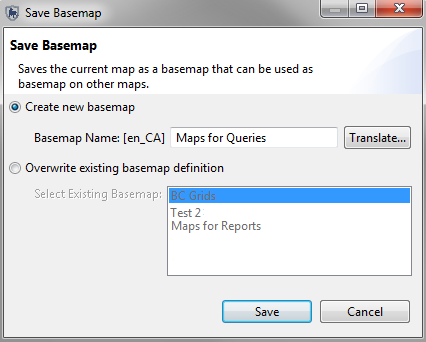
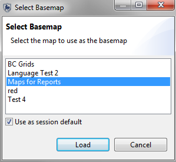
The query filters (patrol and data model) available for use are those components that are common to all data models. SMART searches the unique data model and patrol keys to extract elements common to all of the selected Conservation Areas. If a data model or patrol key has been altered, the software will not be able to query against other areas unless all other keys have similarly been updated. Preserving keys in the data model and patrol parameters allows for a greater success in creating queries in the Cross Conservation Area Analysis framework. Altering keys takes away this ability.
Note: It is highly recommended that edits to the unique keys be made only if the full implications are known.
Any categories and attributes not present in all of the merged Conservation Areas will not appear in the Query Filter list.
A Cross Conservation Area Query is built using the same workflow as a standard query:
As with standard SMART reports, Cross Conservation Area Analysis reports are linked to the saved queries. Any Cross Conservation Area Analysis reports wishing to link to a query must first build queries specific within the Cross Conservation Area Analysis framework. Once queries have been saved, they are then available for use in Cross Conservation Area Analysis reports.
Note: report datasets linked to tables do not need any additional work to access the information.
A Cross Conservation Area Analysis Report is built using the same workflow as a standard report.